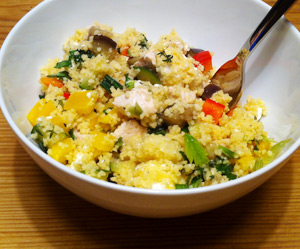

Couscous Mediterranean
5 von 6Eine Frühlingszwiebel, eine Knoblauchzehe, etwas Chilli und frischer Thymian hacken. In Würfeln geschnittene Zucchini dazugeben und in Olivenöl anbraten. Mit salz und Pfeffer abschmecken. Mit Bratsaft beiseite stellen. Nun Pouletgeschnetzeltes in Olivenöl anbraten und mit Paprika, salz und Pfeffer abschmecken. Ebenfalls mit dem Bratsaft beiseite stellen. Je eine rote und gelbe Peperoni, sowie Fettakäse würfeln. Peterli und Basilikum grob schneiden. Alles mit 300g Couscous (Trockengewicht) in einer Schuessel vermengen und mit genügend weissem Balsamico und Pfeffer abschmecken.
